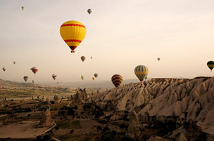
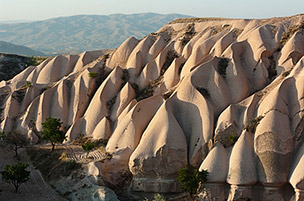
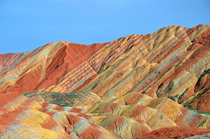
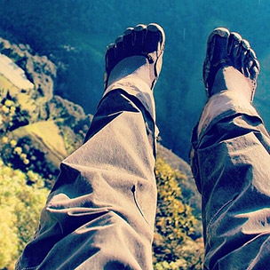
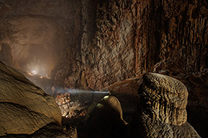
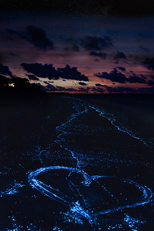

The area has become a popular tourist area and a favorite spot for hot air ballooning.
 The rainbow formation is the result of red sandstone and mineral deposits being laid down for over 24 million years, according to the Telegraph.
At the edge of Ecuador sits a rickety tree house (casa del árbol) overlooking an active volcano in the near distance. With it comes a swing with no harnesses, inviting only the bravest of risk-takers to experience a killer view.
Son Doong is the world’s largest cave, created 2–5 million years ago. A half-mile block of 40-story buildings could fit inside it!
What may appear as a mirror image of the stars above, the bioluminescence in the water is actually due to marine microbes called phytoplankton. The effect it has on the shore is absolutely breathtaking.
Source: Stumble upon 27 surreal places to visit before you die